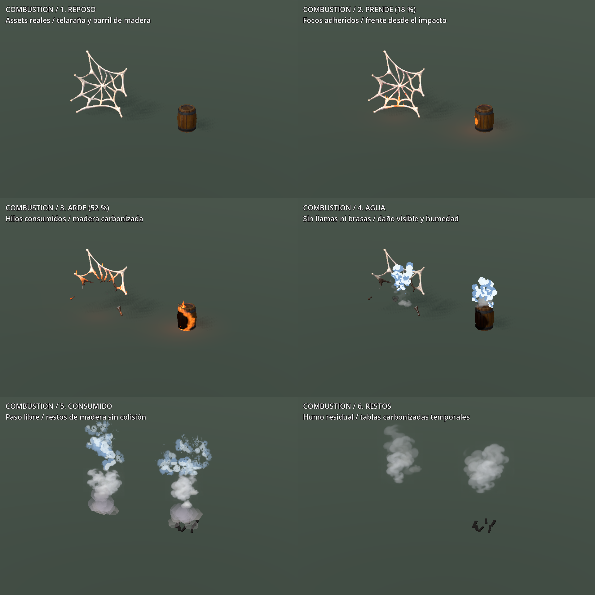

24/11/2026. Primera implementación sobre telaraña y barril de madera, con los assets reales. El frente nace en el impacto, carboniza la superficie y concentra las llamas cerca de su avance. El estado visual se conserva al apagar y continúa al volver a prender.
Lámina de seis fases en Forward+

| Material | Presentación |
|---|---|
| Telaraña | Se mantiene la malla sana y un frente radial irregular ilumina y consume sus hilos. Llamas pequeñas y humo reducido. La versión antigua de malla ardiendo queda como alternativa cuando no se usa el nuevo efecto. |
| Madera | Carbonización desde el impacto, focos de llama sobre puntos de la geometría y humo ascendente. Troncos, puertas y torres dejan seis tablas carbonizadas de geometría sencilla, temporales y sin colisión. |
| Agua o hielo sobre fuego | Se eliminan inmediatamente las llamas y el brillo de las brasas. Se conserva la zona quemada; humedad visual durante unos ocho segundos y vapor del efecto existente. Es presentación: no añade protección mecánica contra el fuego a las piezas que no tienen el papel mojable. |
objetos/objetos_3d.gd conecta la presentación con sus puntos existentes de prender, avance, apagado y consumo. Conserva sus relojes, contagio, señales, botín y retirada de colisión. La carbonización visual ya no vuelve a cero al apagar. La telaraña puede conservar huecos visibles antes de que se libere su casilla completa, como exige el contrato actual.
El módulo presentacion/combustion_objeto_3d.gd configura materiales propios del reactivo y reutiliza el shader de Ocluso3D, conservando texturas, normales, recorte alfa y oclusión del jugador. Los puntos se guardan en coordenadas del dueño y el shader transforma el frente a ese mismo espacio: mover, girar o escalar una pieza no deja el fuego atrás.
Abrir laboratorios/LabCombustionObjetos.tscn en Godot y ejecutar la escena: 1 prende, 2 apaga con agua, 3 reconstruye. El barril de madera usa su visual A y el contrato combustible del tronco. Es un prototipo colocado en el laboratorio: los barriles decorativos de todos los mapas no se convierten automáticamente en reactivos. Barril3D, el barril de pólvora con calavera, conserva su implementación independiente.
herramientas/prueba_combustion_objetos.gd: materiales reales, creación diferida de efectos, avance sincronizado, apagado mediante on_spell_hit con humedad, conservación del daño, reencendido, transformaciones, colisión, consumo, restos y ausencia de modificaciones en el asset compartido. Pruebas existentes prueba_fuego.gd y prueba_materia_reactivos_2.gd: cero fallos. Capturas mediante herramientas/captura_combustion_objetos.gd; fracciones controladas del reloj real, sin partida completa.
Presupuesto por objeto encendido: ocho focos con dos quads cruzados, reserva de catorce bocanadas de humo y una luz sin sombras. Estos nodos se crean al primer encendido. Los restos duran unos 3,7 segundos; el humo puede sobrevivir 1,4 segundos al dueño. No se ha medido el rendimiento de un incendio masivo. Las tablas son formas procedurales simplificadas, no fragmentos extraídos del GLB. Todo hecho por código; no requiere Blender.
El laboratorio registra el botín generado sin crear recogibles: no tiene mapa donde consultar sus alturas. Esa adaptación está solo en el laboratorio; el consumo de objetos en los niveles mantiene su botín habitual.
Salidas y logs: output/combustion_2026-11-24/. El motor avisa de que no puede crear caché en user:// dentro del entorno; las capturas se guardan correctamente. Sin commit.